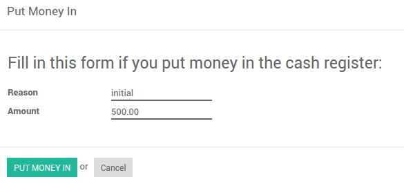

The cash register is a journal to register receivings and payments transactions. It calculates the total money in and out, computing the total balance.
Configuration

- Configure the Cash journal in .
- In the tab Journal Entries, the Default Debit and Credit Account can be configured as well as the currency of the journal
Active
Set active to false to hide the Journal without removing it.
Type
Select 'Sale' for customer invoices journals.
Select 'Purchase' for vendor bills journals.
Select 'Cash' or 'Bank' for journals that are used in customer or vendor payments.
Select 'General' for miscellaneous operations journals.
Use in Point of Sale
Check this box if this journal define a payment method that can be used in a point of sale.
Company
Company related to this journal
Short Code
The journal entries of this journal will be named using this prefix.
Next Number
The next sequence number will be used for the next invoice.
Entry Sequence
This field contains the information related to the numbering of the journal entries of this journal.
Dedicated Credit Note Sequence
Check this box if you don't want to share the same sequence for invoices and credit notes made from this journal
Credit Notes: Next Number
The next sequence number will be used for the next credit note.
Credit Note Entry Sequence
This field contains the information related to the numbering of the credit note entries of this journal.
Default Debit Account
It acts as a default account for debit amount
Default Credit Account
It acts as a default account for credit amount
Currency
The currency used to enter statement
Debit Methods
Manual: Get paid by cash, check or any other method outside of Odoo.
Electronic: Get paid automatically through a payment acquirer by requesting a transaction on a card saved by the customer when buying or subscribing online (payment token).
Batch Deposit: Encase several customer checks at once by generating a batch deposit to submit to your bank. When encoding the bank statement in Odoo,you are suggested to reconcile the transaction with the batch deposit. Enable this option from the settings.
Payment Methods
Manual:Pay bill by cash or any other method outside of Odoo.
Check:Pay bill by check and print it from Odoo.
SEPA Credit Transfer: Pay bill from a SEPA Credit Transfer file you submit to your bank. Enable this option from the settings.
Group Invoice Lines
If this box is checked, the system will try to group the accounting lines when generating them from invoices.
Profit Account
Used to register a profit when the ending balance of a cash register differs from what the system computes
Loss Account
Used to register a loss when the ending balance of a cash register differs from what the system computes
Show journal on dashboard
Whether this journal should be displayed on the dashboard or not
Check Printing Payment Method Selected
Technical feature used to know whether check printing was enabled as payment method.
Check Sequence
Checks numbering sequence.
Manual Numbering
Check this option if your pre-printed checks are not numbered.
Next Check Number
Sequence number of the next printed check.
Creation of bank statement
This field is used for the online synchronization:
depending on the option selected, newly fetched transactions
will be put inside previous statement or in a new one
Amount Authorized Difference
This field depicts the maximum difference allowed between the ending balance and the theoretical cash when closing a session, for non-POS managers. If this maximum is reached, the user will have an error message at the closing of his session saying that he needs to contact his manager.
Usage
How to register cash payments?
To register a cash payment specific to another customer, you should follow these steps:
- Go to
- Fill in the start and ending balance
- Register the transactions, specifying the customers linked to the transaction
Put money in
Put money in is used to placed your cash manually before starting your transactions. From the Register Transactions window, go to
Take money out
Take money out is used to collect/get yor your cash manually after ending all your transactions. From the Register Transaction windows, go to

The transactions will be added to the current cash payment registration.